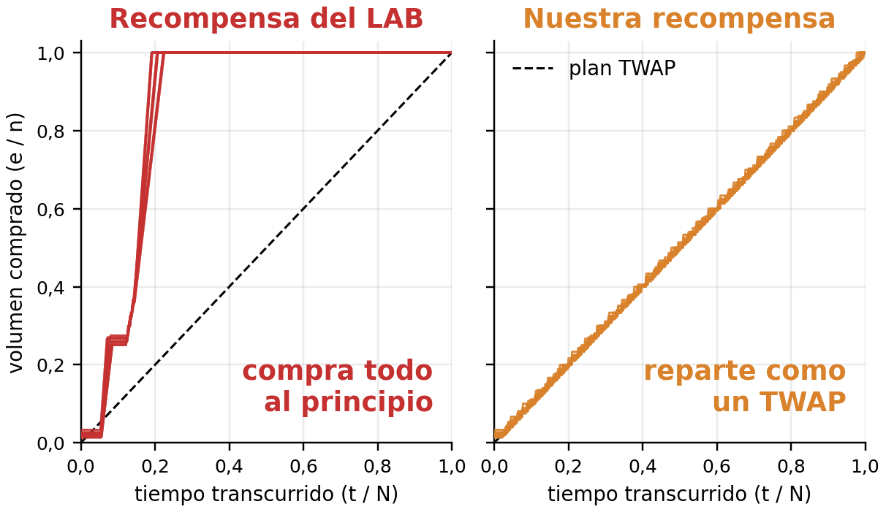
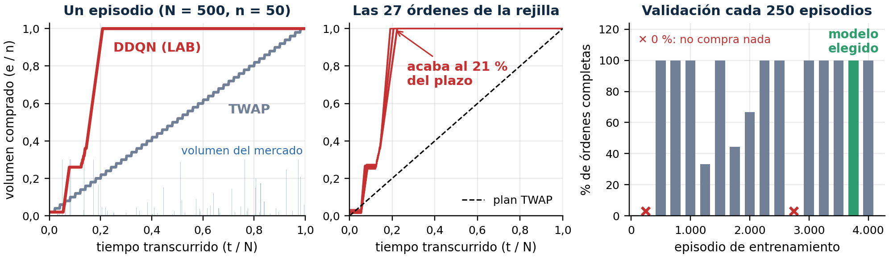
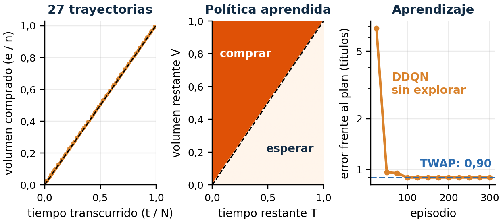
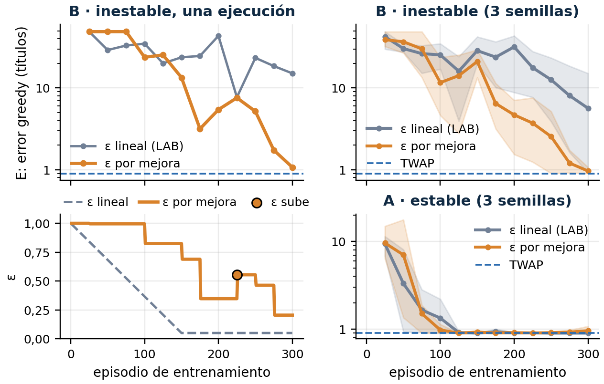
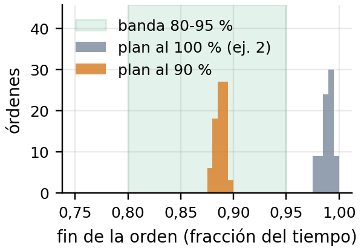
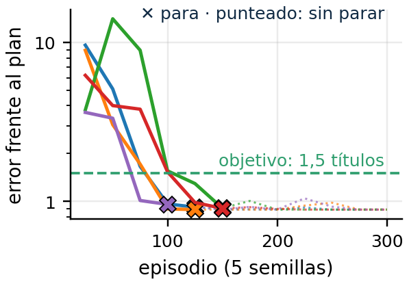
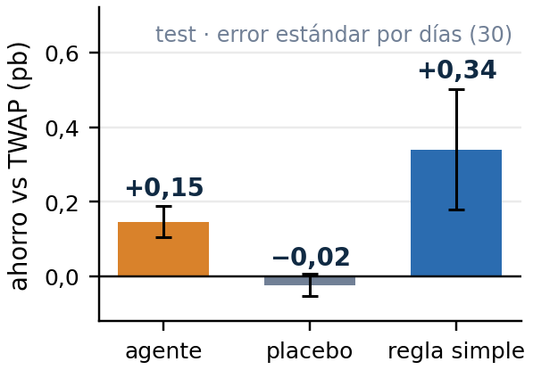
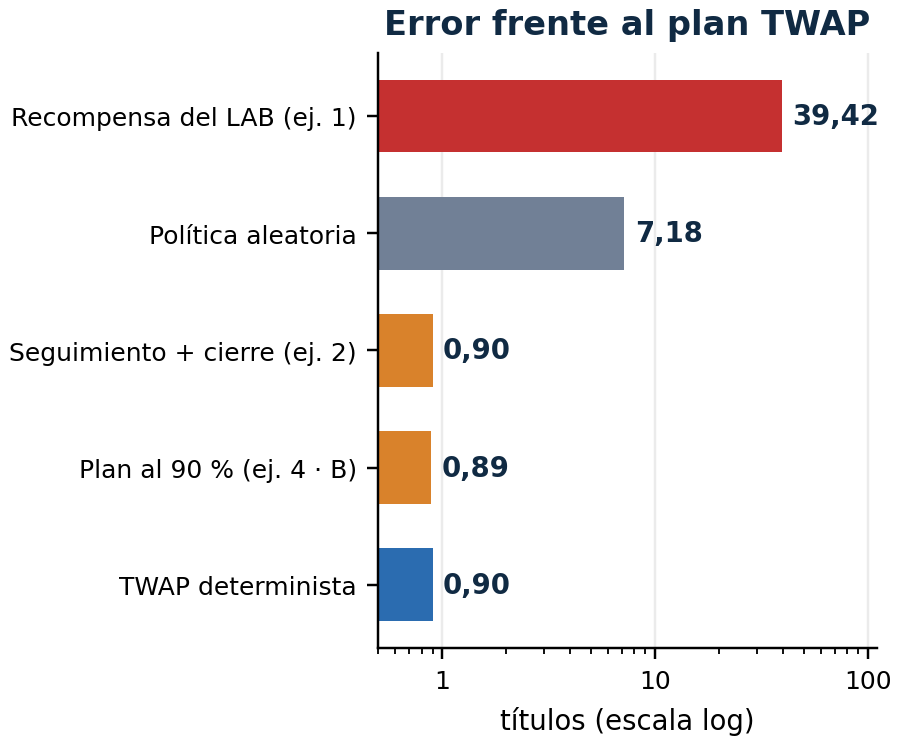

Double DQN que trocea una orden grande de Repsol: del LAB a un TWAP aprendido, y un paso más allá

Las mismas 27 órdenes de compra, la misma red y el mismo estado [T, V]: solo cambia la recompensa.
¿Puede un DQN aprender a ejecutar como un TWAP… y mejorarlo?
Óscar Romero Quincoces · Fernando Dapena Tauste · Daniel García López
Noviembre 2026 · Código y resultados: github.com/Romequinco/rl-execution-agents

| Política fija | LAB | Sin cierre | Con cierre |
|---|---|---|---|
| TWAP | −0,009 | −43,0 | −43,7 |
| Todo al principio | −0,013 | −47,6 | −471,0 |
| Todo al final | +0,020 | −471,0 | −471,0 |
| Aleatoria | −0,011 | −254,9 | −272,5 |
Retorno medio en las 27 órdenes (c = 5). Sin cierre, «todo al principio» casi empata con el TWAP.






Preguntas